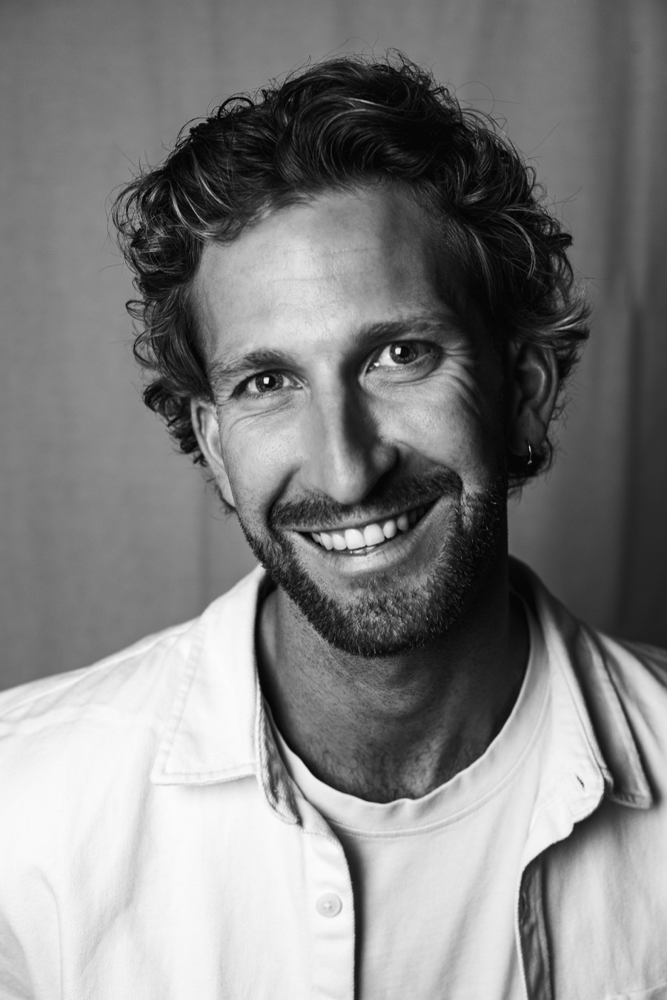

01 · De C van connectie
Alles staat er al. Het praat alleen niet met elkaar.
Groei zit zelden in één afdeling, ze zit in de kloof ertussen: data die niemand leest, marketing die niet met strategie praat, mensen die naast elkaar werken in plaats van met elkaar. De onderdelen zijn meestal prima. Ze staan alleen los van elkaar.
Mijn doel is om deze silo's te verbinden. Vanaf dan is groei een vermenigvuldiging, geen optelsom.


02 · De D van digitaal
Cijfers, geen adjectieven.
Digitaal is voor mij pas af als het draait: geen decks die in een lade verdwijnen. Systemen in productie, omzet die je kan aanwijzen.
€3M+
attributed revenue uit new sales en accountgroei
6
AI-pilots draaien vandaag; wat werkt, gaat in productie
3
nieuwe services uitgerold: server-side tracking, GEO, geautomatiseerde marketingscans
4 jr
bij KIXX: van digital marketeer tot Branch Manager
8 jr
in marketing zonder pauze, sinds 2021 ook zelfstandig
Onderbouwd met drie postgraduaten: Digital Marketing · Humane AI · Experience Architecture. Elk cijfer is verifieerbaar in één gesprek, of via LinkedIn. Vraag ernaar.
03 · De M van mens
Systemen kan je kopen. Mensen moet je meekrijgen.
Een bedrijf is niet zijn organigram, het zijn de mensen die hun schouders zetten achter het gezamenlijke punt B. Wanneer disciplines stoppen met eilandjes te zijn, stoppen mensen met radertjes te zijn: ze zien opnieuw het geheel waar ze deel van uitmaken.
Vier jaar middenin KIXX leerde me hoe een bedrijf vanbinnen voelt, en dat geen systeem blijft draaien als de mensen het niet dragen. Het bedrijf groeit omdat de mensen groeien. Het is ook het stuk waar ik zelf het hardst aan werk.
Systeem én mens. Allebei, of het heeft niet gewerkt.


04 · De X van KIXX
KIXX. Ons team. Aan mij om dat waar te maken.
Sinds 1 juli leid ik KIXX: een performance-agency van meer dan dertig mensen in Brugge, een vestiging binnen de groep. KIXX staat zelf niet stil, net daarom past het. Hetzelfde model op grotere schaal: disciplines verbinden, systemen bouwen die blijven draaien, mensen laten groeien in hun werk.
Ik stuur niet vanuit de zijlijn: ik sta in het werk, naast de mensen die het elke dag doen. Waar we naartoe werken: het beste performance-agency in de Benelux.
De X staat niet toevallig voor vermenigvuldigen.
Intermezzo · speel gerust
Silo's bewegen pas als jij beweegt.
Sleep de letters. Meer moet dat niet zijn.
sleep ze samen · c · d · m · x

De mens achter de vier letters
Renke Pieters.
Keynote-spreker over AI en digitale groei. Ironman-finisher (Frankfurt, 2025), dezelfde discipline als het werk: de lijn vasthouden wanneer het niet meer leuk is. En daarnaast de andere snelheid: surfen, de zee, Spaans dat op peil blijft met één reis per jaar. Vader van twee. Van Blankenberge, werkt in Brugge.
Keynotes o.a. voor Marketing Performance Day · Indeed AI-panel · KIXX Academy · Euromeat Group · Noel Franklin · Rexel
2017 · C Hotels · F&B Manager
Eerste leidinggevende rol, in de hospitality in Oostende. Meegenomen: alles begint bij gastvrijheid.
2018 · Silverjet Belgium · sales & marketing
Luxereizen verkopen en vermarkten. Meegenomen: verkopen is luisteren.
2020 · Proud Mary · online marketeer
Het digitale vak geleerd, hands-on. Meegenomen: online is meetbaar, dus eerlijk.
2021 · Vitinn · zelfstandig in bijberoep
IJslands voor vuurtoren, zoals die van Blankenberge: licht schijnen, anderen op koers helpen. Meegenomen: alles zelf leren doen.
2022 · KIXX · van marketeer tot strategist
Digital Performance Marketeer, daarna Digital Growth & AI Strategist. Meegenomen: hoe een agency vanbinnen voelt.
2024 · VIVES · docent e-commerce
Praktijkinzichten uit het werkveld, in het postgraduaat Digitale Marketing. Meegenomen: uitleggen is de beste leerschool.
2025 · CDMX · Growth & Innovation Manager
Eigen vennootschap, genoemd naar Mexico City: straatcultuur en start-up-energie bovenop eeuwenoude geschiedenis. Het acroniem kwam vanzelf: curiosity, drive, mastery, multiplies. Meegenomen: van licht schijnen naar in beweging zetten.
2026 · KIXX · Branch Manager
Een ploeg van dertig+ in Brugge. Meegenomen: alles hierboven.